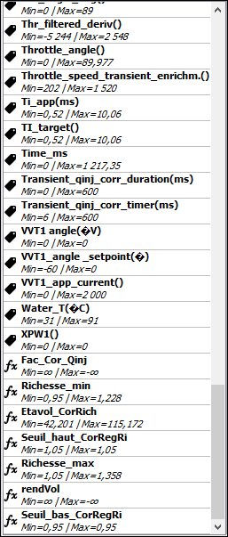

| Clicker sur le bouton situé dans la barre d'outils ou via le menu (Fichier => Ouvrir log) |
Une fois le log chargé, les différentes variables disponibles s'afficheront dans une liste déroulante.
|  | Chaque variable est affichée avec ses valeurs min/max
|
||||||